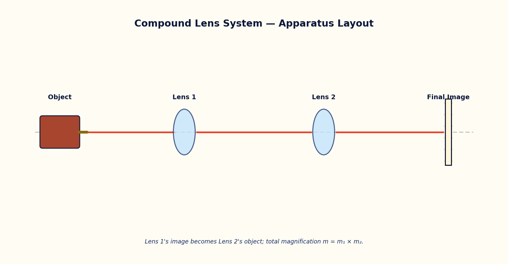

7. Image Formation by a Compound Lens System¶
Module
Geometrical Optics · Module 6
Try it live
Explore this on the interactive simulator with real-time sliders and graphs: 🔬 Launch in Simulator
Aim¶
To trace image formation through two thin lenses in series and to determine the total magnification of the compound system.
Theoretical Background¶
When an object is imaged by two lenses placed in series (as in a compound microscope or a telescope eyepiece pair), the image formed by the first lens acts as the object for the second lens. Each stage independently obeys the thin-lens equation 1/v − 1/u = 1/f, using the sign convention that distances are measured from the respective lens, with real objects/images on the appropriate sides.
If the image formed by lens 1 would fall beyond the position of lens 2, that intermediate image behaves as a virtual object for lens 2, and the object-distance u2 must be taken as negative in the sign convention used here — the second lens intercepts converging rays before they can form a real image.
The total lateral magnification of the compound system is the product of the individual magnifications of each lens: m_total = m1 × m2, where m_i = -v_i/u_i for each stage.
Governing Formulas¶
Thin lens equation (each stage):
Magnification of one lens:
Total magnification:

Simulator Controls¶
| Control | Symbol | Range | Unit |
|---|---|---|---|
| Object distance from lens 1 | u1 | 5 – 40 | cm |
| Lens 1 focal length | f1 | 3 – 25 | cm |
| Lens separation | L | 10 – 60 | cm |
| Lens 2 focal length | f2 | 3 – 25 | cm |
Procedure¶
- Set u1, f1, L and f2 to their default values and record v1 (image distance from lens 1), u2 (object distance for lens 2), v2 (final image distance) and m_total from the readouts.
- Vary u1 alone over its range and tabulate v1, u2, v2 and m_total at each setting.
- Vary the lens separation L alone (restoring u1) and tabulate the same quantities; note any case where u2 becomes negative (virtual object for lens 2).
- Vary f2 alone and tabulate v2 and m_total.
- For one setting, verify v1 using the thin-lens equation by hand and compare with the simulator readout.
Observation Table¶
Table: Image formation through the two-lens compound system
| S. No. | u1 (cm) | f1 (cm) | L (cm) | f2 (cm) | v1 (cm) | u2 (cm) | v2 (cm) | m_total |
|---|---|---|---|---|---|---|---|---|
| 1 | ||||||||
| 2 | ||||||||
| 3 | ||||||||
| 4 | ||||||||
| 5 | ||||||||
| 6 | ||||||||
| 7 | ||||||||
| 8 |
Graph¶
Plot Final image distance v2 (cm) (y-axis) against Lens separation L (cm) (x-axis).
Expected trend: a smooth curve, discontinuous where u2 changes sign.
v2 vs L, illustrating the virtual-object transition at lens 2
Calculation¶
- For a chosen row, apply 1/v1 - 1/(-u1) = 1/f1 to compute v1 by hand.
- Compute u2 = L - v1 (with sign convention) and then apply 1/v2 - 1/(-u2) = 1/f2 to compute v2.
- Compute m_total = m1 × m2 and compare with the simulator's displayed value.
Result¶
Table: Verification of compound-lens image formation
| Row | v1 (calculated) | v1 (simulator) | v2 (calculated) | v2 (simulator) | m_total |
|---|---|---|---|---|---|
| 1 | |||||
| 2 | |||||
| 3 |
Maximum Permissible Error¶
From 1/v = 1/f + 1/u for a single lens stage, propagate the errors in the measured object distance u and the known/measured focal length f. Apply once per lens stage.
Precautions¶
- Apply the sign convention consistently for every stage; a common error is to forget that u2 can be negative.
- Use the zoom/pan controls if the final image falls outside the default view before recording v2.
Self-Check Quiz¶
1. In a two-lens system, the object for the second lens is:
- A) Always the same as the object for the first lens
- B) The image formed by the first lens
- C) Undefined until the final image forms
- D) Always at infinity
Answer: B — Each lens is treated independently in sequence: lens 1's image becomes lens 2's object.
2. The total magnification of a two-lens system is:
- A) m1 + m2
- B) m1 − m2
- C) m1 × m2
- D) (m1 + m2)/2
Answer: C — Magnifications multiply through a series of imaging stages: m_total = m1 × m2.
3. If the first lens's image would form beyond the second lens's position, that intermediate image acts, for the second lens, as:
- A) A real object with positive u2
- B) A virtual object, requiring u2 to be taken as negative in this sign convention
- C) No object at all — the system fails
- D) The final image directly
Answer: B — The second lens intercepts the still-converging rays before a real image forms, so it 'sees' a virtual object on the far side.
4. Each stage of a compound lens system obeys which equation?
- A) Malus's Law
- B) The thin-lens equation 1/v − 1/u = 1/f
- C) The grating equation
- D) Snell's law only
Answer: B — Every lens stage independently obeys the same thin-lens equation, just with its own u, v and f.
Viva-Voce Questions¶
- What does it mean physically for lens 2 to receive a 'virtual object'?
- How does this two-lens analysis extend to a compound microscope with an objective and an eyepiece?
- Why is the image formed by the first lens treated as the object for the second lens?
- Under what condition does the total magnification of a two-lens system become negative?
- How would the final image position change if the separation between the two lenses were increased?
- What is the difference between linear (transverse) magnification and angular magnification?
- Name one real optical instrument that relies on a compound lens system similar to this experiment.